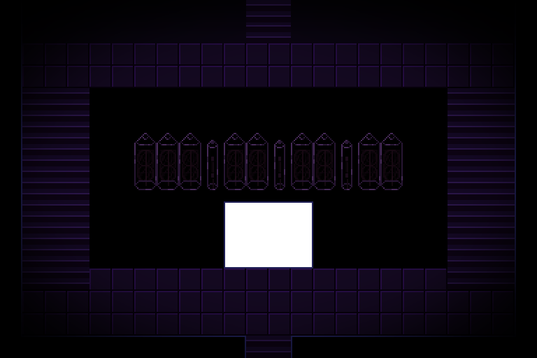

Note:
Setting your system's clock to reach Equinox is useless here. This page functions as a basic, online countdown to the actual Spring Equinox. Though your effort in changing your clock is commendable, try not to as you may confuse yourself.